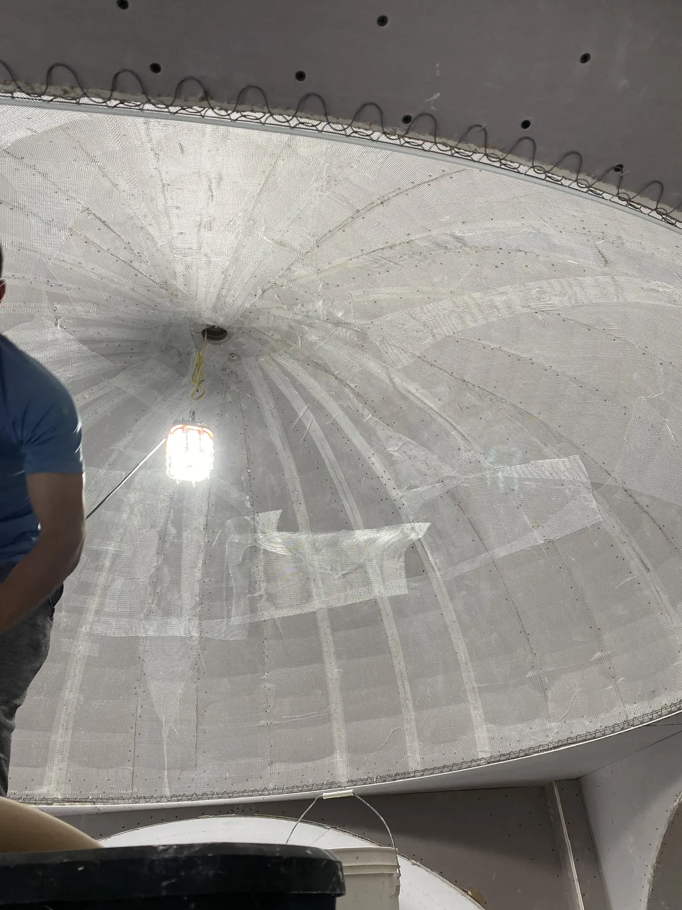
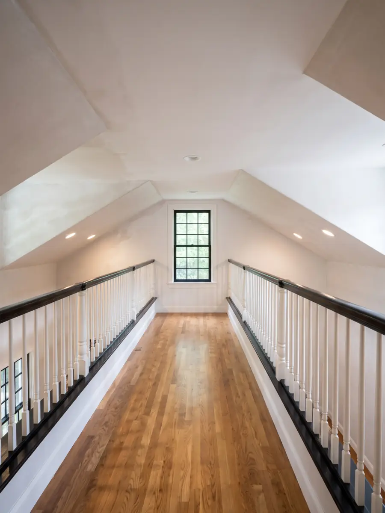
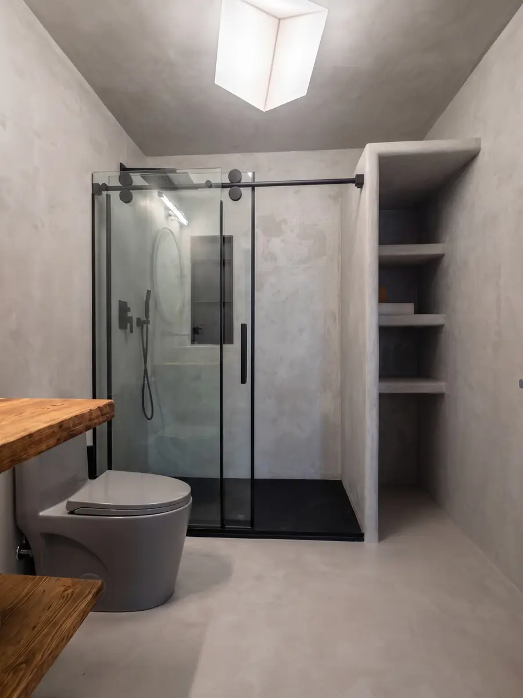

North Shore, MA
Melrose has one of the largest collections of Victorian and early 1900s homes north of Boston, and most of them still have their original plaster. We repair horsehair plaster walls and ceilings the right way, keep the character of the house intact, and bring premium finishes like Venetian plaster, microcement and tadelakt to Melrose homeowners who want more than painted drywall. The owner walks every job and puts the price in writing before any work starts.
Most of our Melrose work is repair and restoration in older houses, with premium finishes on renovations and bathrooms:
Cracks, bulges and ceilings that have started to sag are the most common calls we get from Melrose. We re-attach loose plaster to the lath with plaster washers, fill the cracks with compatible material and skim the area so it disappears under paint. See how we handle plaster ceiling repair step by step.
Ice dams, an old roof or a leaking upstairs bathroom can soak a plaster ceiling in a few hours. We confirm the leak is fixed and the plaster is dry, cut out only what is ruined and rebuild it to match. More on our water-damaged ceiling repair process.
If your walls show decades of patches, a full skim coat gives you one smooth, even surface again. On additions, finished attics and gut renovations we install blueboard and veneer plaster, the New England standard that is harder and more durable than taped drywall.
For a feature wall, a dining room or a renovated bathroom, we apply Venetian plaster, seamless microcement and traditional tadelakt by hand. Few contractors anywhere north of Boston install these finishes, and none of the Melrose-based ones do. We also handle stucco repair on existing exterior stucco (patching and crack repair, not new installations).
More than half of the homes in Melrose were built before World War II, many of them close to Downtown and along the commuter rail line, and the Melrose Town Center Historic District has been on the National Register of Historic Places since 1982. Walk through almost any of these houses and you find the same thing: three coats of lime plaster, often mixed with horsehair, troweled over wood lath, under tall ceilings with cornices, crown details and the odd ceiling medallion.
That plaster is denser, quieter and more fire resistant than drywall, and it is part of what makes a Melrose Victorian feel the way it does. Tearing it out is expensive, messy and usually unnecessary. When we can save the original wall or ceiling, we do. When a section is truly beyond saving, we rebuild it with veneer plaster so the new work matches the hardness and finish of the old, instead of leaving a soft drywall patch that cracks again along the seams.
Before we price anything, we find out why the plaster failed. A crack from settling needs a different fix than a ceiling that let go because of moisture, and a repair that ignores the cause comes back.
An honest price for plaster work depends on the house. The main factors are the size and condition of the area, whether the original plaster can be re-attached or has to be rebuilt, the ceiling height (tall Victorian ceilings and stairwells need staging), and whether there is water damage hiding behind the surface. A premium finish like Venetian plaster or microcement is priced by the finish and the square footage.
That is why we do not quote over the phone. We visit your Melrose home for free, explain the options, and give you one fixed written price. If you want a sense of the numbers first, read our guide on the cost to repair a plaster ceiling in Massachusetts.
Actual work from completed jobs in Greater Boston, the same kind of repair and finish work we do in Melrose homes.



Two guides Melrose homeowners with older houses tend to find useful: plaster vs drywall in old homes, and how to fix a water-damaged plaster ceiling.
Outside Melrose, we bring the same owner-led repair and premium finishes to Plastering in North Reading, MA · Plastering in Boston, MA · Plastering in Newton, MA · Plastering in Brookline, MA · Plastering in Chestnut Hill, MA. See every town on our service areas page.
Yes, in most cases. Horsehair plaster that has cracked or pulled away from the lath can usually be re-attached with plaster washers, filled and skimmed to match the surrounding wall. We only recommend tearing out and replacing a section when the lath itself has failed or the plaster has crumbled, and we show you why before you decide.
Call or text the owner as soon as you see a stain or a sagging spot. We prioritize water damage, come out to check the ceiling, confirm the leak is fixed and the plaster is dry, then rebuild the damaged area so it blends with the rest of the room.
Yes. Skim coating is one of the most common requests we get from Melrose homeowners. We skim old plaster that has years of patches showing through, and we install blueboard with veneer plaster on additions and renovations for a hard, smooth surface that lasts much longer than taped drywall.
It depends on the size of the damaged area, whether the plaster can be re-attached or needs rebuilding, the ceiling height and whether there is water damage behind it. We give you a fixed written price after a free visit, so you know the exact number before any work starts.
Yes. We install authentic Venetian plaster, seamless microcement and traditional tadelakt in Melrose homes, finishes that almost no other local contractor offers. The owner applies them himself.
Cracked ceiling, water stain or a finish you have been dreaming about? The owner answers directly, and the price goes in writing before any work starts.
Four quick steps. The owner replies within one business day.
Prefer to talk? Call (617) 461-7575
One tap. Your call goes straight to the owner.
Or call now: (617) 461-7575